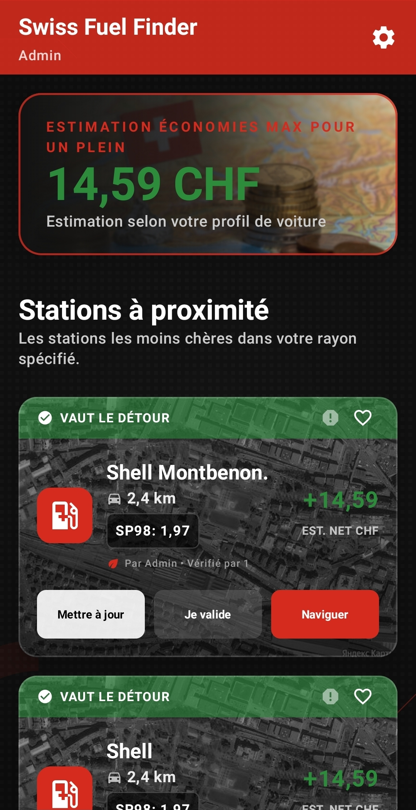
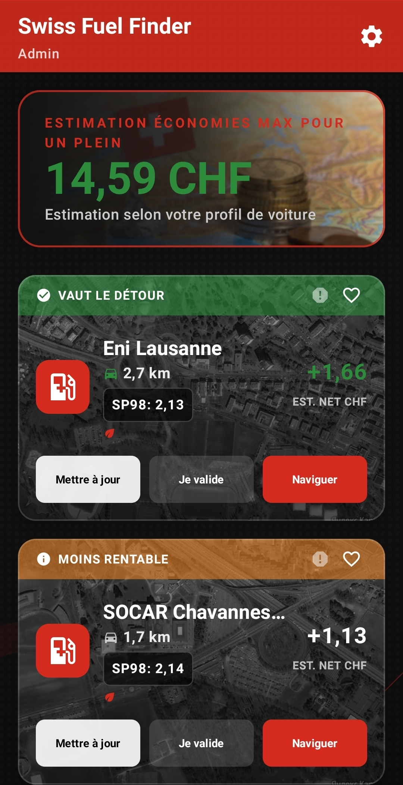

Switzerland's Smartest Fuel App
Most apps show you the cheapest price. SFF calculates if the detour is actually worth it — using your tank size and fuel consumption.
Why SFF is different
The nearest station is rarely the most profitable one. SFF does the maths so you don't have to.
Other fuel apps
Swiss Fuel Finder
How it works
Enter your tank size and average fuel consumption once. SFF uses this to personalise every single calculation to your car — not someone else's.
3,989+ stations updated 3× daily from official Swiss sources. Advanced filters and community reports remove closed or private stations automatically.
Each station shows your estimated net CHF savings — not just the price per litre. Drive only when it's genuinely worth it.
3,989+
Stations across Switzerland
3×
Price updates per day
4
Languages supported
15 CHF
Max savings per tank
See it in action
Every screen is designed to give you the right answer at a glance. "Worth the detour?" answered in seconds.


What's inside
3,989+ stations synced from official Swiss sources three times daily. Always accurate, always current — no user-submitted guesses.
We calculate the real profit after factoring in the detour. The nearest station is not always the most profitable one — SFF finds the one that is.
Real drivers update prices in real time. Each price shows a "Verified by User" count so you know exactly how fresh it is.
English, Deutsch, Français, and Italiano. SFF speaks all four Swiss national languages — switch anytime from settings.
Advanced filters and community reports automatically remove closed or private stations. Every result in your list is a real option.
Set your tank size and consumption once. From that point, every calculation is tailored precisely to your vehicle — not a generic average.
Get in touch
We're always happy to hear from users — feedback, bug reports, or just to say hello.
✉ info@swissfuelfinder.com